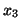
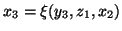
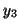
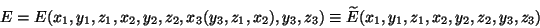
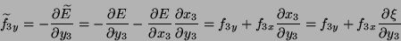
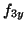
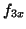
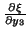
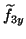

Constraints are dealt with in the following general way: every constrained
equation specifies a single atomic coordinate of some atom (say, coordinate
 of atom 3, i.e.
of atom 3, i.e.

) which is a function of other coordinates of the same and/or some other atoms, i.e.
. The coordinate is then made redundand and is removed from the optimisation space. The consequence of this is that, when calculating the ``force'' in the optimisation space associated with other coordinates which are involved in the given constraint, there will be an additional contribution due to the constraint. In the example above coordinates
,


and
are the actual (physical) forces on atom 3 in the
needed for the calculation of the ``force''
should be calculated analytically for every particular constraint from the known functionThere is presently only one important limitation on the atoms involved in constraints: a reduntand coordinate must be contained in only one constraint; it is not allowed that it is a member of another constraint as well. However, other coordinates are allowed to participate in several constraints.
A note for programmers: coordinates allowed to relax have their relaxation flags (iRx, iRy, iRz) fixed to 1; coordinates not allowed to relax have the flags equal to 0; redundand coordinates, however, have their flags equal to 2. Gradients are calculated for all atoms which have their flags larger than zero.